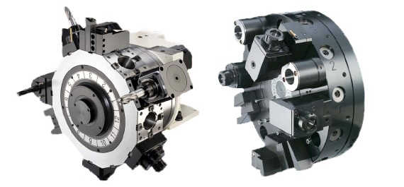
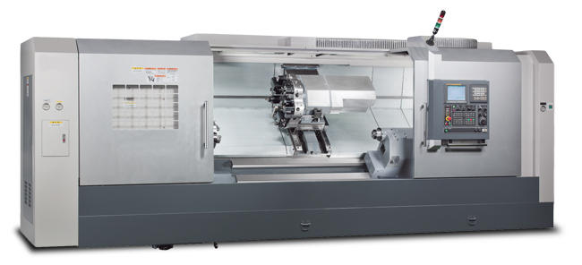
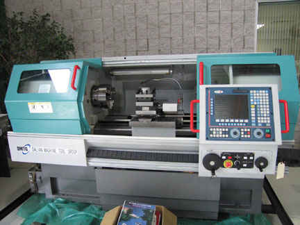
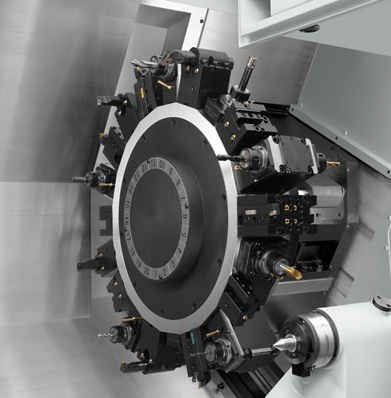
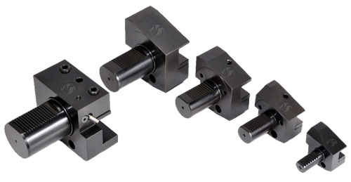

CNC lathe machine tool turret is part of the CNC machine where all tooling is mounted. CNC lathe tool turret has an integral Disk like part (Tool turret disk) on which all the tools are mounted. CNC lathe tool turret is mounted on the x-axis carriage,

Slant Bed CNC Lathe / Flat Bed CNC Lathe
On some CNC lathe machines x-axis carriage with the tool turret is located behind the spindle (such cnc lathe machines are called slant bed cnc lathe machines) and on other cnc lathe it is located at the front (as normal lathe machines) such cnc lathe machines are called flat bed cnc lathe machine.
The below is a Slant Bed CNC Lathe Machine

The below is a Flat Bed CNC Lathe Machine

CNC Lathe Tool Turret Tool Capacity
Tool capacity for cnc lathe machines varies machine to machine. Small CNC lathe machines normally comes with a tool turret capacity of 4 or 8 tools stations. Bigger and heavy CNC lathe machines tool turrets are big and heavy and accordingly will hold more tools such as 12 or more.

Tool Holder
Tool holder is the actual part which fastens the tool to the cnc lathe tool turret Disk. Tool holder size also depends upon the cnc lathe tool turret size, heavy CNC late machine tool turret comes with big bore for tool holders such as 50 mm diameter. For the small tool turret this might be 40 mm diameter or less. Tool holders come in variety of shapes to suit the tool to hold.

CNC Lathe Tool Turret Rotation
CNC lathe tool turret rotates with the cnc program commands. Normally a letter “T” is used to call a tool in the working position.
The tool rotation is dependent on cnc lathe machine.
Some cnc lathe tool turret rotate in one direction (CW or CCW ).
Some cnc lathe tool turret rotates both directions, such tool turret direction is optimized for the nearest tool station.
Some cnc lathe give full control over tool call up, you can call by optimized direction or you can call tool by rotating tool turret by CW direction or CCW.